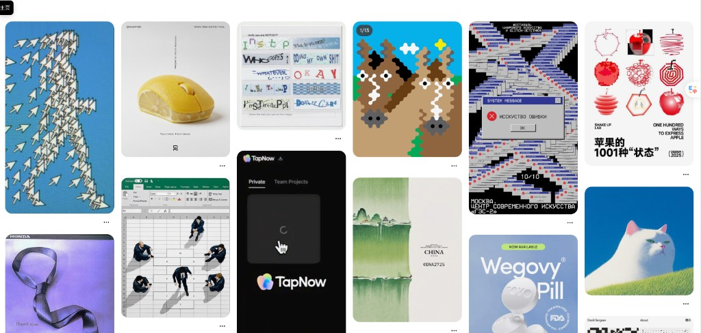

08:30
裂变混剪 · 开头批量测试
对齐 80% 裂变 / 20% 拓新；单日开头测试可达 40 条量级。
六个星期：把「剪片」跑成「可投放、可裂变、可读数」的内容工厂节奏。
下一步想吃透千川罗盘，并接上真人实拍创意脚本。
| 观察窗 | 消耗 | ROI | 转化信号 | 我在链路中 |
|---|---|---|---|---|
| 9/16–10/14 | ≈ ¥76,190 | 1.30 | 转化 880 · CVR 2.2% · 成本 ≈¥86.6 | 开始用罗盘找「吃消耗」的镜头 |
| 9/23–10/14 | ≈ ¥53,352 | 1.27 | 转化 603 · CVR 4.24% | 跨批次对照效率 |
| 9/20–10/14 | ≈ ¥32,058 | 1.26 | 转化 364 · CVR 3.5% | 练习跨时间窗读数 |
| 高消耗成片 | ¥5万–7.6万+ | 1.21–1.26 | 部分标「可优化」 | 判断继续裂变 / 改开头 |
罗盘「引用视频镜头」让我看到：长占用镜头（如 9822 ≈10s+）偏信任叙事，短钩子（0.3–1s）偏进场。裂变应先锁已验证镜头，再只换一个变量。
转化成本约 ¥86–88 时，同质裂变边际变薄。更需要新前 3s、新真人钩子、新 S 级镜头 —— 这也是我想往脚本上游走的原因。
测开头就只换开头。
一次只动一个变量。
外壳负责爆量，内核负责转化。
成片能进投放、消耗能跑起来，比「只交作业」更有反馈感。
产能上来后，最怕剪得多但归因不清 —— 不知道哪条外壳真正贡献消耗。
对真人实拍脚本有兴趣：不是跳过剪辑，而是让拍摄少废片、测试更准。
营销号皮（配乐 / 特效 / 字幕 / 转场）和电商节奏手感还不够稳，和组内「能跑量」的风格有差距，要持续对标练。
批量开头、裂变、实拍消化、发片并行时，出片速度和一次过审率还能再提；少返工才是真效率。
容易安排不好优先级：抓着一条线深挖时，另一条（复盘 / 发片 / 拓新）就掉；要用每日 SOP 把顺序钉死。
测外验开头时混入未验证片段 → 归因失败。已纠偏为单变量工单思维。
能读消耗/ROI/转化，但还不够熟到每天主动开罗盘定裂变清单。
过程指标强（成片量、投放消耗），结果指标「破万单」需带教对齐统计规则。
写过鄙视链雏形；真人实拍创意脚本尚未系统承接（对齐计划第 3 月）。
电商皮与效率还在爬坡时，任务一多就排不好序：深挖一条线，复盘/发片/拓新容易掉。要用每日 SOP 五步强制排序。
以消耗结果为导向
讨论是否复制
成功要素与复制法
按模板 · 方向不重复
新想法 · 当日坑点
希望把「每日开罗盘」变成固定动作，输出：可裂变镜头清单 · 加预算/停投判断 · 每周一页 TOP 复盘。
对齐实习计划第 3 月。已接触大量真人成片与街采/研发中心素材，想提前进入需求侧。
自我感受最需要继续练的三块，也希望带教在排期上帮我对齐「先做什么、后做什么」。

| # | 想确认的事 | 带教反馈 | BP 反馈 |
|---|---|---|---|
| 1 | 我当前按计划算第几月？能否部分提前做第 3 月脚本？ | ||
| 2 | 破万单如何统计到我个人？ | ||
| 3 | 真人实拍脚本：何时 / 先交几条样稿算入门？ | ||
| 4 | 每日 SOP 五步：复盘昨日 → 分析大盘爆量 → 分析内部爆量 → 按模板陈述个人计划 → 分享新想法/踩坑。请带教确认我是否按此执行到位。 |